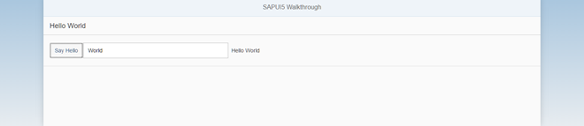

Step 12: Shell Control as Container
Now we use a shell control as container for our app and use it as our new root element. The shell takes care of visual adaptation of the application to the device’s screen size by introducing a so-called letterbox on desktop screens.
Preview

The app is now run in a shell that limits the app widthCoding
You can view and download all files at Walkthrough - Step 12.
webapp/view/App.view.xml
<mvc:View controllerName="sap.ui.demo.walkthrough.controller.App" xmlns="sap.m" xmlns:mvc="sap.ui.core.mvc" displayBlock="true"> <Shell> <App> <pages> <Page title="{i18n>homePageTitle}"> <content> <Panel headerText="{i18n>helloPanelTitle}"> <content> <Button text="{i18n>showHelloButtonText}" press=".onShowHello"/> <Input value="{/recipient/name}" description="Hello {/recipient/name}" valueLiveUpdate="true" width="60%"/> </content> </Panel> </content> </Page> </pages> </App> </Shell> </mvc:View>
The shell control is now the outermost control of our app and automatically displays a so-called letterbox, if the screen size is
larger than a certain width.
There are further options to customize the shell, like setting a custom background image or color and setting a custom logo. Check the related API reference for more details.